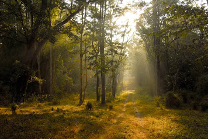

Wayanad
Wayanad is a rural district in Kerala state, southwest India. In the east, the Wayanad Wildlife Sanctuary is a lush, forested region with areas of high altitude, home to animals including Asiatic elephants, tigers, leopards and egrets. In the Ambukuthi Hills to the south, Edakkal Caves contain ancient petroglyphs, some dating back to the Neolithic age.
top attractions to visit in wayanad
Wayanad wildlife Sanctuary
The Wayanad wildlife sanctuary is located 18 km east of Sultan Bathery. It actually spreads into two regions of Kerala - Cannanore in the north and Calicut in the south. An intrinsic part of the Nilgiri Biosphere, the Wayanad wildlife sanctuary of Kerala is joined to two other wildlife parks - Nagarhole and Bandipur of Karnataka on the northeast and Mudumalai of Tamil Nadu on the southeast. The sanctuary was formed in the year 1973 and was brought under the Project Elephant in the year 1991-92.. Occupying an area of 345 sq km, the Waynad wildlife sanctuary happens to be the second largest one in the state of Kerala.
Chembra Peak

Chembra Peak is one of the highest peak in the Western Ghats and the highest peak in Wayanad hills, at 2,100 m above sea level. Chembra is located near the town of Meppadi and is 8 km south of Kalpetta.Chembra Peak is one of the highest peak in the Western Ghats and the highest peak in Wayanad hills, at 2,100 m above sea level. Chembra is located near the town of Meppadi and is 8 km south of Kalpetta.